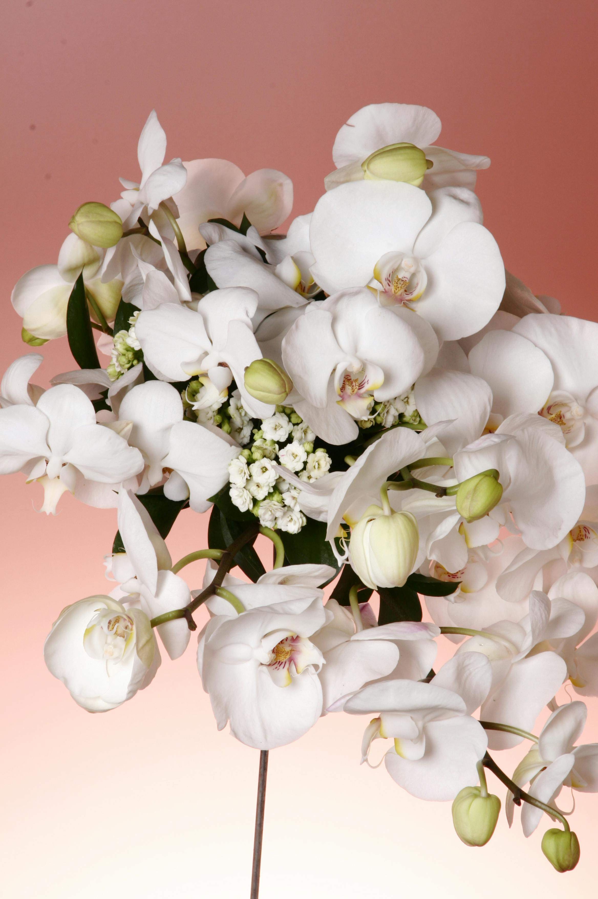
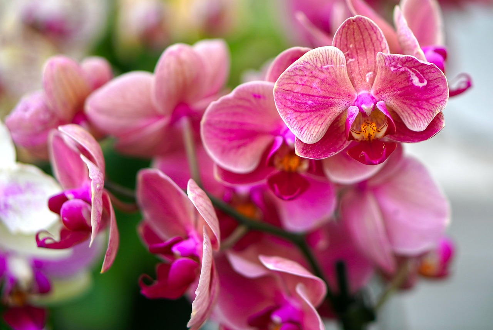
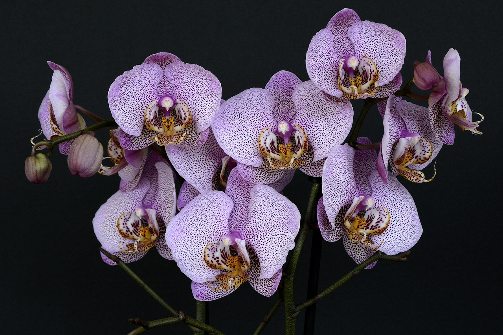

Cymbidium spp. - 高洁与典雅的象征



纯洁淡雅
代表：春兰素心高贵神秘
代表：蝴蝶兰娇艳动人
代表：石斛兰富贵吉祥
代表：大花蕙兰• 浇水原则："不干不浇，浇则浇透"
• 夏季高温时注意遮阴降温
• 冬季保持适当干燥，促进花芽分化
• 使用专用兰花盆，保证排水良好
• 兰花为附生植物，需要特殊植料
• 空气湿度保持在60-80%为佳
• 每年换盆一次，更换植料
• 花期前后需要特殊管理
• 换盆分株
• 施萌芽肥
• 适度浇水
• 防治病害
• 遮阴防晒
• 增加湿度
• 加强通风
• 防虫治病
• 施促花肥
• 减少浇水
• 适当增光
• 准备开花
• 保温防寒
• 控水促花
• 花期管理
• 观赏养护
兰花在中国文化中占有重要地位，被誉为"花中君子"，象征高尚的品格和淡泊的情怀：
• 兰与梅、竹、菊并称"四君子"
• 兰花象征君子的"清、幽、淡、雅"
• 中国文人常以兰明志，表达高洁情怀
• 兰香被誉为"王者之香"，清而不浊